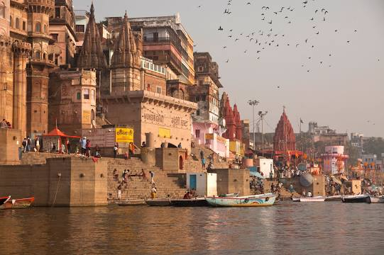
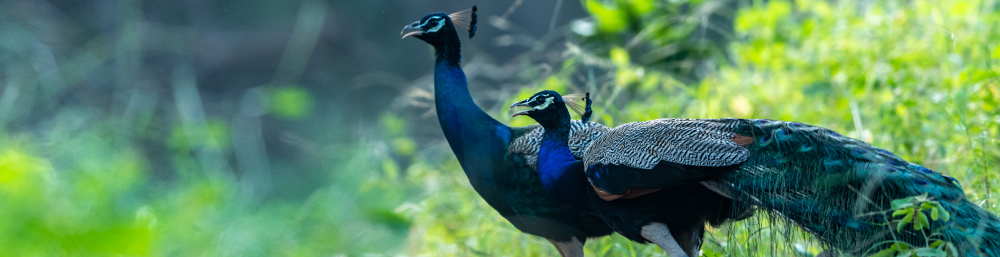

-

Varanasi
Varanasi also known as Banaras or Benares and Kashi. It is a city on the Ganges river in northern India that has a central place in the traditions of pilgrimage, death, and mourning in the Hindu world.
-

Goa
Goa is a state on the southwestern coast of India within the Konkan region, geographically separated from the Deccan highlands by the Western Ghats. It is located between the Indian states of Maharashtra to the north and Karnataka to the east and south, with the Arabian Sea forming its western coast.
-

Ranthambore
With its diverse landscape, relatively easy tiger sighting, and good light, Ranthambore National Park makes one of the best wildlife photography destinations in India. In this popular national park, there is great opportunity of taking shots of a variety of animals and birds against a beautiful backdrop.
-

Maldives
Maldives, officially the Republic of Maldives, is an archipelagic state located in South Asia, situated in the Indian Ocean.
-

Kashmir
Kashmir is the northernmost geographical region of the Indian subcontinent. Until the mid-19th century, the term "Kashmir" denoted only the Kashmir Valley between the Great Himalayas and the Pir Panjal Range.
-

Rajasthan
Rajasthan is a state in northern India. It covers 342,239 square kilometres (132,139 sq mi) or 10.4 per cent of India's total geographical area. It is the largest Indian state by area and the seventh largest by population.
-
Kerala
Kerala is a state on the Malabar Coast of India. It was formed on 1 November 1956, following the passage of the States Reorganisation Act, by combining Malayalam-speaking regions of the erstwhile regions of Cochin, Malabar, South Canara and Thiruvithamkoor.
-

Cochin
Kochi, also known as Cochin is a major port city on the Malabar Coast of India bordering the Laccadive Sea, which is a part of the Arabian Sea. It is part of the district of Ernakulam in the state of Kerala and is commonly referred to as Ernakulam.
-

Bannerghatta Safari
Bannerghatta National Park is a national park in India, located near Bangalore, Karnataka. It was founded in 1970 and declared as a national park in 1974. In 2002, a small portion of the park became a zoological garden, the Bannerghatta Biological Park.
-

Niagara-Falls
Niagara Falls is a group of three waterfalls at the southern end of Niagara Gorge, spanning the border between the province of Ontario in Canada and the state of New York in the United States. The largest of the three is Horseshoe Falls, which straddles the international border of the two countries.